电机控制之电磁基础
此文讲解与电机控制相关的电磁基础，从最简单的磁路模型开始讲述，逐渐过渡到直流电机、同步电机和异步电机的基本原理。
参考书籍：《现代电机控制技术》第二版，王成元。
物理中电磁学
大学物理中的电磁学，是从电荷讲到Maxwell’s Equations。对于接下来要讲述的内容，不需要我们将电磁学学得多么好，不过，还是需要对以下与电磁相关的知识点有一定了解：
- 欧姆定律
- 安培环路定理
- 法拉第电磁感应定律，以及动生电动势和感生电动势
- 互感和自感
- 磁场能量
磁路模型
双线圈励磁的铁芯如图1-1所示，铁芯上装有线圈$A$和$B$，匝数分别为$N_A$和$N_B$。主磁路由铁芯磁路和气隙磁路串联构成，两段磁路的断面面积均为$S$。假设外加电压$u_A$和$u_B$为任意波形电压，励磁电流$i_A$和$i_B$亦为任意波形电流。
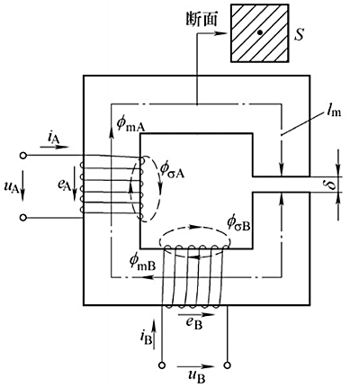
单线圈励磁
- 磁路欧姆定律
单线圈励磁是指只有$A$线圈励磁的情况。根据安培环路定律定，对于线圈$A$有：
$$
{\oint_L}H{\cdot}dl={\sum}i
{\tag {1-1}} {\label {1-1}}
$$
式中，$H$为磁场强度，${\sum}i$为闭合回路包围的总电流，电流流向、磁场强度方向与闭合回路符合右手螺旋关系。
取闭合回路为$l_m+{\delta}$所组成的回路，设在该闭合回路上，铁芯磁路内的$H_m$处处相等，方向与积分路径一致，气隙内$H_{\delta}$同样如此，则有：
$$
H_m l_m+H_{\delta} {\delta}=N_A i_A
{\tag {1-2}} {\label {1-2}}
$$
式中，$l_m$为铁芯磁路长度，${\delta}$为气隙长度。
定义$f_A$为磁路的磁动势，其定义式为：
$$
f_A=N_A i_A
{\tag {1-3}} {\label {1-3}}
$$
在磁路中，磁场强度$H$产生磁感应强度$B$，则有：
$$
\begin{split}
B_m &= {\mu}_{Fe} H_m = {\mu}_r {\mu}_0 H_m \\
B_{\delta} &= {\mu}_0 H_{\delta}
\end{split}
{\tag {1-4}} {\label {1-4}}
$$
式中，${\mu}_{Fe}$为铁芯磁导率，${\mu}_r$为相对磁导率，${\mu}_0$为真空磁导率；电机中常用的铁磁材料的磁导率${\mu}_{Fe}$约是真空磁导率${\mu}_0$的2000~6000倍，空气磁导率与真空磁导率几乎相等。
由式${\eqref {1-4}}$，则式${\eqref {1-3}}$中磁动势有：
$$
\begin{split}
f_A &= {B_m \over {\mu}_{Fe}} l_m + {B_{\delta} \over {\mu}_0} {\delta} \\
&= B_m S {\cdot} {l_m \over {\mu}_{Fe}S} + B_{\delta} S {\cdot} {\delta \over {\mu}_{0}S} \\
&= {\phi}_{mA} {\cdot} R_m + {\phi}_{\delta} {\cdot} R_{\delta}
\end{split}
{\tag {1-5}} {\label {1-5}}
$$
式中，${\phi}_{mA}$为铁芯磁路主磁通，$R_m = {l_m \over {\mu}_{Fe}S}$为铁芯磁路磁阻；${\phi}_{\delta}$为气隙磁通，$R_{\delta} = {\delta \over {\mu}_{0}S}$为气隙磁路磁阻。
由于磁通的连续性，所有 ${\phi}_{mA} = {\phi}_{\delta}$，即有 $B_m = B_{\delta}$。从而式${\eqref {1-5}}$ 可以表示为：
$$
\begin{split}
f_A &= {\phi}_{mA} {\cdot} R_m + {\phi}_{\delta} {\cdot} R_{\delta} \\
&= {\phi}_{mA} {\cdot} R_{m\delta} \\
&= {\phi}_{\delta} {\cdot} R_{m\delta}
\end{split}
{\tag {1-6}} {\label {1-6}}
$$
式中，$R_{m\delta} = R_m + R_{\delta}$为磁路总磁阻。通常将式${\eqref {1-6}}$称为磁路欧姆定律，图1-2为串联磁路的等效磁路图。
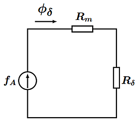
将式${\eqref {1-6}}$进行变形，得到：
$$
\begin{split}
f_A &= {\phi_{mA} \over \Lambda_m} + {\phi_\delta \over \Lambda_\delta}\\
&= {\phi}_{\delta} ({1 \over \Lambda_m} + {1 \over \Lambda_\delta}) \\
&= {\phi_\delta \over \Lambda_{m\delta}}
\end{split}
{\tag {1-7}} {\label {1-7}}
$$
式中，$\Lambda_m={1 \over R_m}$ 为铁芯磁路磁导，$\Lambda_\delta={1 \over R_\delta}$ 为气隙磁路磁导，$\Lambda_{m\delta}$ 为串联磁路总磁导。
对于图1-1中的磁路，尽管铁芯磁路长度比气隙磁路长度要长得多，但由于 $\mu_{Fe} >> \mu_0$，串联磁路的总磁阻将取决于气隙磁路的磁阻，故很多时候，可以将铁芯磁路的磁阻忽略不计。
- 自感
主磁通 $\phi_{mA}$ 是穿过气隙后而闭合的，提供了气隙磁通，所以又将 $\phi_{mA}$ 称为励磁磁通。
定义线圈$A$的励磁磁链为：
$$
\psi_{mA} = \phi_{mA} N_A
{\tag {1-8}} {\label {1-8}}
$$
将式${\eqref {1-3}}$、${\eqref {1-6}}$代入式${\eqref {1-8}}$ 可得：
$$
\psi_{mA} = {N_A^2 \over R_{m\delta}} \cdot i_A = N_A^2 \Lambda_{m\delta} \cdot i_A \\
{\tag {1-9}} {\label {1-9}}
$$
定义线圈$A$的励磁电感为 $L_{mA}$，其定义式为：
$$
L_{mA} = {\psi_{mA} \over i_A} = {N_A^2 \over R_{m\delta}} = N_A^2 \Lambda_{m \delta}
{\tag {1-10}} {\label {1-10}}
$$
励磁电感$L_{mA}$表征了线圈单位电流产生磁链 $\psi_{mA}$ 的能力。励磁电感与铁芯磁阻和气隙磁阻有关，若将铁芯磁路的磁阻忽略不计（$\mu_{Fe} = \infty$，且有 $R_{m\delta} = R_\delta, \; \Lambda_{m\delta} = \Lambda_\delta$），则有$L_{mA} = N_A^2 \Lambda_\delta$。
在磁动势 $f_A$ 的作用下，还会产生没有穿过气隙，主要经由铁芯外空气磁路而闭合的磁场，称之为漏磁场，如图1-1所示，它与线圈 $A$ 交链，产生漏磁磁链 $\psi_{\sigma A}$，可表示为：
$$
\psi_{\sigma A} = L_{\sigma A}i_A
{\tag {1-11}} {\label {1-11}}
$$
式中，$L_{\sigma A}$ 为线圈 $A$ 的漏磁电感，表征了线圈单位电流产生漏磁磁链 $\psi_{\sigma A}$ 的能力。由于漏磁磁场主要分布于空气中，所以$L_{\sigma A}$ 近乎为常值，且在数值上远小励磁电感 $L_{mA}$。
线圈 $A$ 的总磁链为：
$$
\psi_{AA} = \psi_{\sigma A} + \psi_{mA} = L_{\sigma A} i_A + L_{mA} i_A = L_A i_A
{\tag {1-12}} {\label {1-12}}
$$
式中，$\psi_{AA}$ 是线圈 $A$ 中电流 $i_A$ 产生的磁场链过自身线圈的磁链，称为自感磁链。$L_A = L_{\sigma A} + L_{mA}$ 称为自感，自感由漏磁电感和励磁电感两部分构成。
- 磁场能量
在没有机械运动的情况下，输入电流 $i_A$ 产生的净电能将转化成磁场能量。磁场能量分布在磁场的整个空间，单位体积内的磁能 $w_m$ 为：
$$
w_m = {1 \over 2} BH = {1 \over 2} \cdot {B^2 \over \mu}
$$
由于 $\mu_{Fe} >> \mu_0$，铁芯储能密度很低，远小于气隙储能密度。忽略铁芯储能，则有：
$$
W_m = {1 \over 2} {B_\delta^2 \over \mu_0} V_\delta
$$
式中， $W_m$ 为主磁路磁场能量，全部存储于气隙中，$V_\delta$ 为气隙体积。
若忽略漏磁磁场，当线圈 $A$ 励磁磁链通从 $0$ 增长到 $\psi_{mA}$ 时，磁场能量为：
$$
W_m = \int_0^{\psi_{mA}} i_A d\psi
$$
此即为线圈 $A$ 励磁的能量公式。
双线圈励磁
双线圈励磁是指$A$线圈和 $B$ 线圈同时励磁的情况。此时忽略铁芯磁路磁阻（$R_{m\delta} = R_\delta, \; \Lambda_{m\delta} = \Lambda_\delta$），磁路为线性，采用叠加原理分析。同线圈 $A$ 一样，可以求得线圈 $B$ 的自感磁链和磁动势如下：
$$
\psi_{BB} = \psi_{\delta B} + \psi_{mB} = L_{\delta B} i_B + L_{mB} i_B = L_B i_B \\
f_B = N_B i_B = {\phi_\delta \over \Lambda_{m\delta}} = {\phi_{mB} \over \Lambda_{m\delta}} = {\phi_{mB} \over \Lambda_\delta}
$$
线圈 $B$ 产生的磁通同时与线圈 $A$ 交链，反之亦然。这部分相互交链的磁通称为互感磁通。在图1-1中，励磁磁通 $\phi_{mB}$ 通过铁芯磁路全部与线圈 $A$ 交链，故电流 $i_B$ 在线圈 $A$ 中产生的互感磁链 $\psi_{mAB}$ 为：
$$
\psi_{mAB} = \phi_{mB} N_A = i_B N_B \Lambda_\delta N_A
{\tag {1-13}} {\label {1-13}}
$$
定义线圈 $B$ 对线圈 $A$ 的互感 $L_{AB}$ 为：
$$
L_{AB} = {\psi_{mAB} \over i_B} = N_A N_B \Lambda_\delta
{\tag {1-14}} {\label {1-14}}
$$
同理，定义线圈 $A$ 对线圈 $B$ 的互感 $L_{BA}$ 为：
$$
L_{BA} = {\psi_{mBA} \over i_A} = N_A N_B \Lambda_\delta
{\tag {1-15}} {\label {1-15}}
$$
并且，当两绕组匝数相等时，则励磁电感与互感也相等，即 $ L_{mA} = L_{mB} = L_{AB} = L_{BA}$。
即有线圈 $A$ 和 $B$ 的互感相等。线圈的全磁链为自感磁链和互感磁链之和，则全磁链为：
$$
\begin{split}
\psi_A = \psi_{AA} + \psi_{mAB} = L_A i_A + L_{AB} i_B \\
\psi_B = \psi_{BB} + \psi_{mBA} = L_B i_B + L_{BA} i_A \\
\end{split}
{\tag {1-16}} {\label {1-16}}
$$
从磁路欧姆定律开始，最后导出全磁链，其之间的流程如图1-3所示。
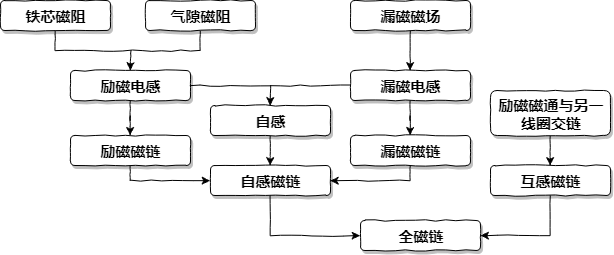
定子与转子模型
电磁转矩和磁阻转矩
将图1-1的电磁装置，只能进行电能和磁能的转换。为了将磁能转化成机械能，现在将该装电磁装置改成如图2-1所示的，具有定、转子绕组和气隙的机电装置。线圈 $B$ 嵌入转子槽中，成为转子绕组，线圈 $A$ 嵌入定子槽中，成为定子绕组。假设定、转子绕组匝数相同（$N_A = N_B$），忽略定、转子齿槽影响，且忽略定、转子铁芯磁阻，气隙是均匀的。
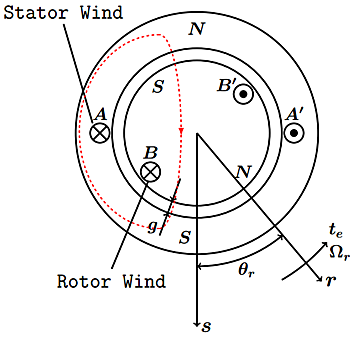
图2-1中，将 $s$ 定义为定子磁场轴线（即绕组内部磁场方向，定子上标注的 $N,S$ 极，是绕组 $A$ 产生的磁场相对转子而言的），将 $r$ 定义为转子磁场轴线。定、转子间单边气隙长度度为 $g$，总气隙为 $\delta = 2g$。$\theta_r$ 为转子位置角，逆时针方向为正。因气隙均匀，故转子在旋转时，定、转子绕组励磁电感 $L_{mA}$ 和 $L_{mB}$ 保持不变，又因绕组数相同，故有 $L_{mA} = L_{mB}$。
但此时绕组 $A$ 和 $B$ 间的互感 $L_{AB}$ 不再是常值， 而是转子位置角 $\theta_r$ 的函数，即有：
$$
L_{AB}(\theta_r) = L_{BA}(\theta_r) = M_{AB}cos(\theta_r)
{\tag {2-1}} {\label {2-1}}
$$
式中，$M_{AB}$ 为互感最大值。
当 $s$ 轴与 $r$ 轴一致时，互感 $M_{AB}$ 达到最大值，此时绕组 $A$ 与绕组 $B$处理全耦合状态，励磁磁通 $\phi_{mB}$ 全部与线圈 $A$ 交链（$L_{AB} = L_{mB}$），同样励磁磁通 $\phi_{mA}$ 也全部也线圈 $B$ 全部交链（$L_{BA} = L_{mA}$），故有下式恒成立：
$$
L_{mA} = L_{mB} = L_{AB}(0) = L_{BA}(0) = M_{AB} cos(0) = M_{AB}
{\tag {2-2}} {\label {2-2}}
$$
- 电磁转矩
如图2-2所示，$B_{mA}(\theta_s)$ 是定子绕组 $A$ 在气隙中建立的径向励磁磁场，为正弦分布。
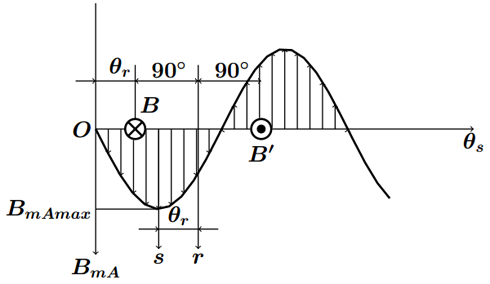
根据安培力“Bli”观点，线圈边 $B$ 和 $B’$ 所受电磁大小相等，所产生的力矩方向相同，则电磁转矩为：
$$
t_e = N_B i_B l_r B_{mAmax} sin{\theta_r} \cdot D_r
{\tag {2-3}} {\label {2-3}}
$$
式中， $D_r$ 为转子外径。
由于定子绕组的励磁磁通的表达式，以及定子绕组的励磁磁链的表达式分别为：
$$
\begin{split}
\phi_{mA} &= B_{mAmax} \times S = B_{mAmax} l_r D_r \\
\phi_{mA} &= {\psi_{mA} \over N_A} == {L_{mA} i_A \over N_A}
\end{split}
$$
通过上述2个式子和式$\eqref {2-2}$进行简单变形可以得到：
$$
l_r B_{mAmax} \cdot D_r = {L_{mA} i_A \over N_A} = {M_{AB} i_A \over N_B}
{\tag {2-4}} {\label {2-4}}
$$
将式 $\eqref {2-4}$ 代入式 $\eqref {2-3}$可以电磁转矩表达示为：
$$
t_e = i_A i_B M_{AB} sin(\theta_r)
{\tag {2-5}} {\label {2-5}}
$$
将式 $\eqref {2-5}$ 改写为：
$$
t_e = {1 \over L_m}(L_m i_A) (L_m i_B) sin(\theta_r) = {1 \over L_m} \psi_{mA} \psi_{mB} sin(\theta_r)
{\tag {2-6}} {\label {2-6}}
$$
式中，$L_m = M_{AB} = L_{mA} = L_{mB}$，$\psi_{mA}$ 和 $\psi_{mB}$ 分别为绕组 $A$ 和 $B$ 自身产生的励磁磁链。通过此式分析，可以认为电磁转矩是定、转子正弦分布径向励磁磁场相互作用的结果，由转子励磁磁场产生的电磁转矩也称为励磁转矩。
将式 $\eqref {2-6}$ 进一步改写为：
$$
t_e = \psi_{mA} i_B sin(\theta_r)
{\tag {2-7}} {\label {2-7}}
$$
此式在形式上反映了，载流导体在磁场会受到电磁力的作用。
- 磁阻转矩
图2-1中气隙是均匀的，其转子是隐极式结构。而转子是凸极式结构时，气隙就不是均匀的，如图2-3所示，图中只画出了定子铁芯的部磁路，且转子铁芯上没有安装绕组，气隙磁场仅由定子绕组产生。
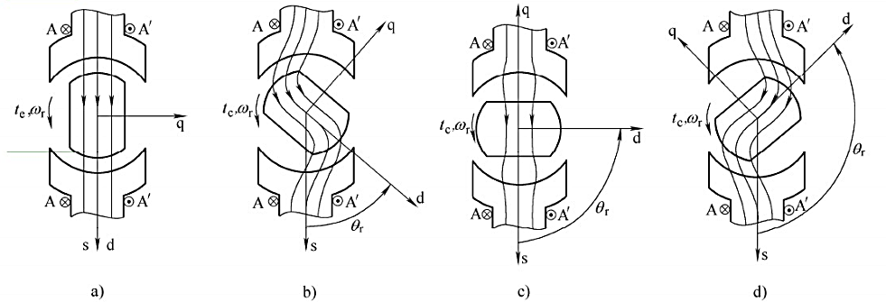
在图2-3 a中，$\theta_r = 0^\circ$，转子 $d$ 轴与定子绕组 $s$ 轴重合，将转子在此位置时，定子绕组的自感，定义为直轴电感 $L_d$，此时气隙最小，气隙磁导最大。
在图2-3 c中，$\theta_r = 90^\circ$，转子 $q$ 轴与定子绕组 $s$ 轴重合，将转子在此位置时，定子绕组的自感，定义为交轴电感 $L_q$，此时气隙最大，气隙磁导最小。
通过上述说明， 可以知道，转子在旋转的过程中，定子绕组自感 $L_A$ 在 $L_d$ 和 $L_q$ 变化，且有 $L_d > L_q$（$L_d 和 L_q$ 是对定子绕组自感极值的一个称呼，本质还是定子绕组自感）。由于气隙磁导变化而产生的磁阻转矩（推导过程略）为：
$$
t_e = -{\frac 1 2} (L_d - L_q) i_A^2 sin2\theta_r
{\tag {2-8}} {\label {2-8}}
$$
式中，磁阻转矩方向的正方向与$\theta_r$的正方向相同，为逆时针方向，式中的负号表示磁阻转矩的实际方向为顺时针方向，表明磁阻转矩作用是使$\theta_r$减小（即阻止定子转动）。
电磁转矩的控制
根据动力学原理，可列出电动机拖动系统的运动方程为：
$$
t_e = J {d\Omega_r \over dt} + R_\Omega \Omega_r + t_L
{\tag {2-9}} {\label {2-9}}
$$
式中，$t_e$ 为电磁转矩，$t_L$负载转矩，包括了空载转矩，$\Omega_r$为转子机械角速度，$R_\Omega$ 为阻尼系数。
由于转子机械角速度有：
$$
{d\theta_\Omega \over dt} = \Omega_r
$$
式中，$\theta_\Omega$ 为转子旋转角度（机械角度），可将式 $\eqref {2-9}$ 写成：
$$
t_e = J {d^2\theta_\Omega \over dt^2} + R_\Omega {d\theta_\Omega \over dt} + t_L
{\tag {2-10}} {\label {2-10}}
$$
由此可以看出，对电动机转子位置的控制只能通过控制制动转矩 $(t_e - t_L)$ 来实现。也可以说，对电动机的各种控制，归根结底是对电磁转矩的控制。
电机模型
由于图2-1所示的机电装置，在机械能、电能和磁能间的转换原理具有一般性，故由此得出的电磁转矩和磁阻转矩，对于直流电机、同步电机和感应电机均适用。
直流电机
图3-1实际两极直流电机的示意图，与图2-1对比，定子绕组 $A$ 成为了定子励磁绕组，励磁电流 $i_f$ 为直流（这里设其在气隙中产生的径向励磁场为正弦分布），形成了主磁极 $N$ 极和 $S$ 极，且其直轴和交轴（$dq$轴）如图所示；将绕组 $B$ 分解成多个线圈且均匀分布于转子槽中，构成电枢绕组，通过换向器和放在中性线的电刷，可以使旋转的电枢绕组，产生固定不动的磁场。
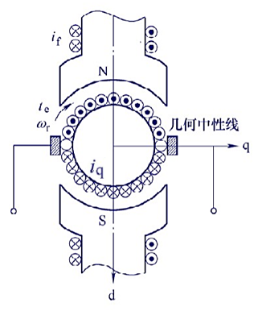
电枢绕组又称为换向器绕组，具有如下特征：电枢绕组是旋转的，但是在电刷和换向器的作用下，在整体效果上，其产生的磁场轴线在空间位置上是固定不动的。所以，定子励磁绕组磁场轴线与电枢绕组磁场轴线成 $\theta_r = 90^\circ$。则直流电机电磁转矩可以表示为：
$$
t_e = i_A i_B M_{AB} sin\theta_r = i_f i_q L_{mf}
{\tag {3-1}} {\label {3-1}}
$$
式中，有$i_f = i_A, \; i_q = i_B, \; M_{AB} = L_{mf}$成立， $i_q$ 为换向器绕组电流，$L_{mf}$ 为定子励磁绕组的励磁电感。由于定子励磁绕组磁链有 $\psi_f = L_{mf} i_f$ ，可将式 ${\eqref {3-1}}$ 表示为：
$$
t_e = \psi_f i_q
{\tag {3-2}} {\label {3-2}}
$$
式 ${\eqref {3-1}}$ 和式 ${\eqref {3-2}}$ 表明，当定子励磁电流 $i_f$ 恒定时（定子励磁磁链 $\psi_f$ 恒定），电磁转矩的大小与转子电流成正比，这对于直流电机的转矩控制来说，是一个非常好的特性。
同步电机
直流电机通过换向器和电刷，来使得定、转子磁场轴线固定不变，恒成 $90^\circ$。同步电机则是使得定、转子磁场轴线均旋转，但在旋转时相对静止，使其轴线成一固定角度。在空间对称分布的三相绕组，通入三相对称交流电，便能使定子绕组产生旋转磁场。
现在将图2-1中的定子绕组 $A$ 变成三相对称绕组 $A-X, B-Y, C-Z$，如图3-2所示，通入三相对称正弦电流，就会在气隙中产生正弦分布且幅值恒定的圆形旋转磁场，旋转速度等于相电流的电角频率 $\omega_s$，并且同样会形成 $N$ 极和 $S$ 极（构成了2极电机）。再将图2-1中的转子绕组 $B$ 变成嵌入转子槽中的分布绕组，作为转子励磁绕组，原转子电流 $i_B$ 就变成励磁电流 $i_f$ 并保持不变。
在图3-2中，两磁场轴线间电角度为 $\beta$，它的大小由于定子旋转磁场速度 $\omega_s$ 和转子速度 $\omega_r$ 决定，若 $\omega_s = \omega_r$，则两磁场相对位置保持不变，所以这种结构的电机称为同步电机。
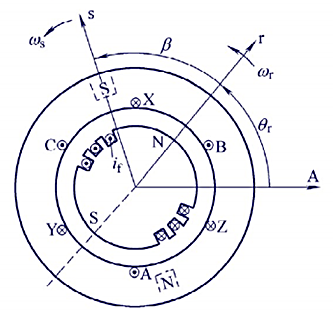
将图3-2简化成图3-3所示的物理模型：
将转子励磁磁场轴线定为 $d$ 轴，$dp$轴系与转子一起旋转；
将 $A$ 相绕组轴线作为空间参考轴，其位置固定不变，与 $dp$ 轴相差电角度 $\theta_r$；
将定子旋转磁场等效成旋转的单轴线圈 $s$，其轴线 $s$ 轴在 $dp$ 轴系中的空间相位角为 $\beta$；
将转子槽中的分布绕组等效成励磁绕组 $f$，且单轴线圈 $s$ 与转子励磁绕组 $f$ 的有效匝数相同。
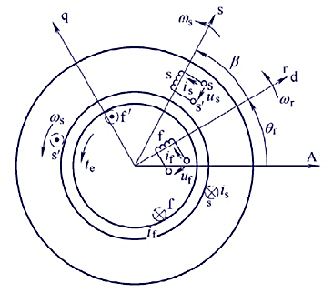
则电磁转矩的表过式为：
$$
t_e = i_s i_f M_{sf} sin\beta = i_s i_f L_m sin\beta
{\tag {3-3}} {\label {3-3}}
$$
式中，$M_{sf}$ 是定、转子互感最大值，电磁转矩 $t_e$ 作用于转子，正方向为逆时针方向。
由于定、转子线圈 $s$ 和 $f$ 有效匝数相同，故有 $M_{sf} = L_{mf} = L_{ms} = L_m$， $L_{mf}$ 和 $L_{ms}$ 分别为线圈 $s$ 和 $f$ 的等效励磁电感。则电磁转矩可写成：
$$
t_e = i_s i_f L_m sin\beta = \psi_f i_s sin\beta
{\tag {3-4}} {\label {3-4}}
$$
式中，$\psi_f = L_{mf} i_f$ 为转子励磁绕组磁链。
图3-2中为隐极同步电机，励磁绕组嵌入圆柱形转子的槽中，若不计定、转子齿槽的影响，则气隙是均匀。图3-4所示的凸极式同步电机，其气隙是不均匀，在产成励磁转矩的同时，还会产生磁阻转矩。
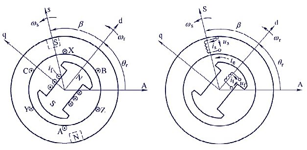
凸极同步电机的总电磁转矩为：
$$
\begin{split}
t_e &= i_s i_f L_m sin\beta + {1 \over 2} (L_d - L_q) i_s^2 sin2\beta \\
&= \psi_f i_s sin\beta + {1 \over 2} (L_d - L_q) i_s^2 sin2\beta
\end{split}
{\tag {3-5}} {\label {3-5}}
$$
式中右端第一项是由于转子励磁产生的励磁转矩，第二项是由于转子凸极效应引起的磁阻转矩。
感应电机
感应电机是将图2-1中的定子绕和转子绕组均变成三相绕组，如图3-5所示。定子三相绕组通入三相对称正弦电流，则会在气隙内产生一个正弦分布的两极旋转磁场，旋转速度与正弦电流的电角频率 $\omega_s$相同。根据电磁感应原理，转子三相绕组会感生出三相对称的正弦电流，其电角频率也为 $\omega_s$，感生出来的三相电流会在气隙中产生正弦分布的两极旋转磁场，旋转速度为$\omega_s$。
定、转子旋转磁场相互作用会产生电磁转矩，使转子旋转。转子旋转速度为 $\omega_r$，要小于 $\omega_s$；因为若是$\omega_r = \omega_s$，则转子绕组中不能产生感应电流。因此，感应电机也称为异步电机。
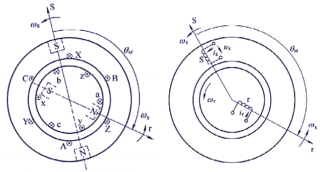
转子旋转磁场轴线 $r$ 在空间相位上滞后于定子旋转磁场轴线 $s$，滞后空间电角度为 $\theta_{sr}$。同三相同步电机一样，将定子绕组等效成单轴线圈 $s$，将转子绕组等效成单轴线圈 $r$。则定、转子旋转磁场相互作用的电磁转矩为：
$$
t_e = i_s i_r M_{sr} sin\theta_{sr}
{\tag {3-6}} {\label {3-6}}
$$
式中，$M_{sr}$ 为线圈 $s$和 $r$互感最大值，若两线圈有效匝数相同，则有 $M_{sr} = L_{ms} = L_{mr}$，$L_{ms}$和 $L_{mr}$分别为线圈 $s$和 $r$的等效励磁电感。电磁转矩 $t_e$ 正方向为逆时针方向。
下表为三种电机和定、转子模型的基本对比：
| 项目 | 定、转子模型 | 直流电机 | 同步电机 | 感应电机 |
|---|---|---|---|---|
| 变换过程 | 定子绕组$A$和转子绕组$B$ | $A$变成定子励磁绕组，$B$变成电枢（换向器）绕组 | $A$变成定子三相对称绕组，$B$变成转子励磁绕组 | $A,B$ 均变成三相对称绕组 |
| 定、转子磁场 | x | 定子励磁磁场固定，电枢磁场固定 | 定子磁场旋转，转子励磁磁场旋转 | 定子磁场旋转，转子磁场为感生磁场 |
| 电磁转矩 | $t_e = i_A i_B M_{AB} sin\theta_r$ | $t_e = \psi_f i_q$ | $t_e = \psi_f i_s sin\beta$ | $t_e = i_s i_r M_{sr} sin\theta_{sr}$ |
| 电磁转矩位置 | $\eqref {2-5}$ | $\eqref {3-2}$ | $\eqref {3-4}$ | $\eqref {3-6}$ |
转载请注明来源，欢迎对文章中的引用来源进行考证，欢迎指出任何有错误或不够清晰的表达。可以在下面评论区评论，也可以邮件至 [ yehuohan@gmail.com ]
文章标题:电机控制之电磁基础
本文作者:z000tech
发布时间:2017-07-13, 16:55:27
最后更新:2018-04-12, 10:25:40
原始链接:http://yehuohan.github.io/2017/07/13/笔记/Motor/电机控制之电磁基础/版权声明: "署名-非商用-相同方式共享 4.0" 转载请保留原文链接及作者。